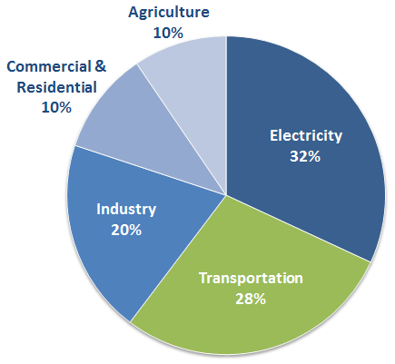

- Transportation sector comprises about a third of greenhouse gas emissions in the US.
- Within that, two-thirds of energy use comes from light-duty cars and trucks.
- So, it's very important to know how the consumers make their car purchase decisions.

Greenhouse Gas Emissions in the US (Source: EPA)
 --- .class #id
--- .class #id